The Backswing: The Upper Body
Upper-body mechanics in the backswing: shoulder turn, scapular retraction, and the racquet path.
The Backswing: The Upper Body
Part 2
Dr. Brian Gordon
In the last article, we examined the role of the lower body during the back swing (Click Here). Now let's move on to the upper body motion in the backswing. This includes the movement of the trunk, the hitting arm segments, and the racquet itself.
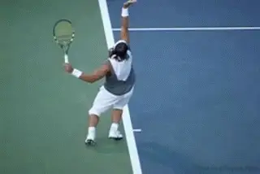
What are the real factors that create racket speed in the backswing?
The ability to generate racket speed in the back swing is one of the main differentiating factors at all levels of play, including professionals. So let's take the backswing motion apart and see what we can learn from our quantitative studies.
Then let's see how we can apply this knowledge in player development, using the example of our young player's serve from the previous articles, and the data provided on his service motion in the 3D interface below.
4 Goals
To begin, let's identify the four primary upper body goals of the backswing.
The first goal is to have all of the joints in configurations that provide for optimal range of motion in the upward swing.
The second goal is to have the muscles surrounding those joints in the best contractile conditions possible.
The third goal is to attain the lowest possible position of the racquet face center at the end of the back swing.
The final goal is to generate the highest possible racquet speed as the racquet starts its upward trek.
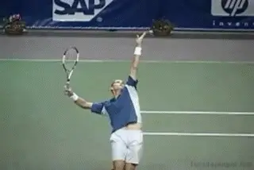
How do "motion dependent effects" drive pro backswings?
The Motion Dependent Effect
The goals are clear, but achieving them is another story. To understand what is really going on, we have to learn more about how the body moves in this phase of the motion.
One of the major findings in our research is that most of the goals in the backswing are achieved through what are called "motion dependent effects." What this means is that nearly all the arm motion, especially in the second half of the backswing, is the result of motion in other segments of the body.
Put another way, the various rotations are not caused by active muscle contractions, but instead by joint forces arising from the motion of the other segments. This is why we call them motion dependent effects.
In my opinion, the way these motion dependent effects work in the back swing is the most mechanically interesting set of motions in tennis.
The motion dependent effect, or joint movement without active muscular contraction, is an important source of motion in all strokes. On the serve backswing, the main cause of this effect is the motion of the trunk, which results in a force being placed on the upper arm. To understand this force, it is necessary to take a detailed look at trunk motion during the backswing.
I've already established a link between the lower body and upper body with the discussion of hip rotation in the last article. The legs drive the hip rotation, which facilitates an upper trunk (shoulder) twisting rotation, that occurs around the spine. (Click Here.)
In the back swing, this upper trunk twist helps in driving the motion of the hitting arm. As we will see in future articles, this is also linked to a significant part of the racquet speed in the upward swing.
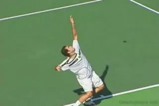
Note the subtle additional backward lean during Pete's backswing.
The twisting rotation of the upper trunk is not, however, as simple as it appears. It's effectiveness in driving the motion of the hitting arm, especially late in the back swing, is related to the angle of the trunk at the end of the backswing.
As we have seen, the server's trunk inclines or leans backward (as seen in a back view) during the windup as a function of the knee bend.
This lean increases during the back swing, causing a shift in the angle of the torso. The increase in this angle that can be difficult to detect with the naked eye, or even with the use of video, but can be measured in 3D dimensional analysis.
Although it is subtle, this increased lean, or tilt, is critical in driving the motion of the shoulder. It is what allows the upper trunk twist to drive the shoulder forward and upward. Without the tilt there would be no upward motion, only the forward component. The upward component, however, is a critical part in creating racket head speed.
To create the additional lean, the player initially leans back slightly at the hips and/or extends the spine. Then, as the body turns into the shot and faces more forward later in the backswing, the tilt continues to increase due to a lateral (sideways) bending in the spine to the left side. This bending is referred to a "cartwheel rotation" of the trunk.
So, the twisting rotation of the upper trunk--a critical component of high level serving--occurs around an axis that is not vertical, but rather tilted to the left. This tilt, or angle, is what allows the twisting motion to elevate the hitting shoulder later in the swing. This elevation is often attributed to the cartwheel rotation of the trunk. However, its primary cause is the upper trunk twist once the body has achieved the proper angle of incline.
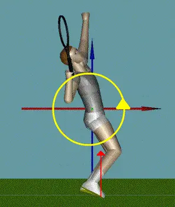
The backswing is a motion dependent effect, driven mainly by forces from the legs and the trunk twist.
A quick reference to the data interface and our example player shows more about how this occurs. It is directly related to the position of the player's center of mass.
Looking at the stick figure in the center (the pure back view), we can see that the center of mass, which is near the line of the trunk and about one third of the distance from the mid-hip to the mid-shoulder, is slightly to the left of the feet.
This leftward position of the center of mass causes the body to lean progressively further backwards as the leg drive occurs. This is due to lateral angular momentum generated by the ground force from the leg drive. The lateral momentum is shown by the yellow arrow in the animation. This momentum is transferred to the trunk, which causes it to increase its lean during the back swing.
In general, considerable variation is seen in the amount of trunk lean players use at all levels. There are pros and cons associated with varying degrees of trunk lean as we will see in the upward swing phase. Players that choose more tilted configurations often use a lateral pinpoint stance as that shifts the ground force even further to the right in a back view.
The tilted configuration of the trunk also plays an important role in the ability to maintain twisting rotation speed once the server loses contact with the ground, as we will see, as well as dictate hitting arm segment orientations near contact.
The timing and speed of these critical actions, combined with vertical effects from the leg drive, result in motion of the shoulder joint. This in turn affects the motion of the hitting arm and racquet, which we will now look at in detail.
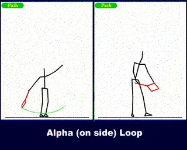
Note the subtle additional backward lean during Pete's backswing.
The Hitting Arm and Racquet
When we look at the various shapes of the backswing, we see a continuum of almost infinite possible variations. But for the sake of conceptual simplicity, we can define two general categories. These have to do mostly with the amount of flexion or bend at the elbow as the racket starts downward.
Alpha Loop
The first backswing shape is what I call the "Alpha Loop," named after the Greek letter "a" turned upward. In the Alpha Loop, as the racket starts to move downward, the elbow bend increases and there is a pronounced forward movement of the tip of the racket (that is, forward toward the target).
Watch in the animation as the player flexes his elbow forward, tilting the racket head at an angle toward the target. This downward racket path is on an arc that resembles the shape of the Greek letter "a" or "Alpha."
Both the forward and the downward movement of the racket in the Alpha backswing have a positive impact on the racquet head speed at this point in back swing. Specifically elbow flexion and wrist radial deviation, are linked to the forward component of the racquet speed.
Note that these both have positive impact on the racquet head speed early in the back swing. And while they help with racquet speed, these actions also prepare the joints for increased range of rotational motion in elbow extension and ulnar deviation in the upward swing.
The shape of the loop is determined by forward racket movement.
Gamma Loop
Some servers possess much less of a forward component in the motion as the racket starts down. This narrows the shape of the loop. I call this second general backswing shape the "Gamma Loop" pattern after the Greek letter "g" (which may appear inverted).
At the start of the Gamma Loop, watch how the elbow flexion stays unchanged, with the forearm at about 90 degrees to the upper arm. As the drop starts, watch the player's hand. Compared to the Alpha Loop, the hand in the Gamma Loop starts down more steeply. The racket tip points more to the side as the racket starts down, instead of pointing directly forward.
This pattern is more prevalent with servers who have lower elbow positions at the start of the backswing, and with players whose hitting arm and racquet structure is more side of the body -- both common attributes of abbreviated back swings.
External Rotation
In both loop patterns, the most important motion is external rotation of the shoulder. "External rotation" is a concept that has become increasingly prevalent in the discussions of high level serving. But what is it, and how is it achieved?
Take a look at the motion in the animation. (Note this is a graphic recreation of the pure loop shapes, not a representation of actual data.) Look at the motion of the upper arm, forearm, hand, and racquet. The backward rotation of the arm and racquet at the shoulder joint is due to external rotation. As the arm and racket rotate externally--or backward in the shoulder joint--the racket drop happens as a consequence.
How does the server achieve this? It is reasonable to assume that if a server contracted the muscles surrounding the shoulder joint in the direction of the external rotation, he could cause the external rotation motion to occur. In reality though, this isn't exactly the way it works.
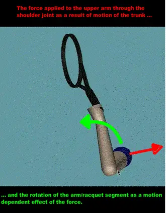
The relationship between the forces on the shoulder and external rotation.
Instead, the majority of the external shoulder joint rotation, and therefore the racquet drop, is a result of the motion dependent effect described earlier. The actual mechanism is shown in the animation. Look at the red arrow. This represents force applied to the upper arm through the shoulder joint. This force is the result of motion of the trunk, motion directly or indirectly tied to the leg drive.
As the shoulder accelerates in the direction of the red arrow, force is applied to the upper arm causing the forearm, hand, and racquet "lag" behind. This causes the backward or external rotation of the upper arm and the downward movement of the racket depicted by the green arrow in the animation.
Again, most of this joint rotation can occur with little or even no contributing muscle activity. We saw in the first part of the backswing article (Click Here) that there are two types of transitions from the wind up to the backswing. These are a Continuous Transition and a Hesitation Transition.
In the case of a Continuous Transition, the external rotation from the wind up actually carries the racket over the top so that it starts on way down already possessing external rotation. With a Hesitation Transition, there is some amount of conscious muscle contraction. But once the racket tip starts to drop, the rest of the external rotation comes from the motion dependent effect.
So let's see more specifically the complex interplay that drives the backswing. We'll do this by breaking the motion into 3 parts, each covering roughly the same amount downward motion in the racket tip.
The First Third
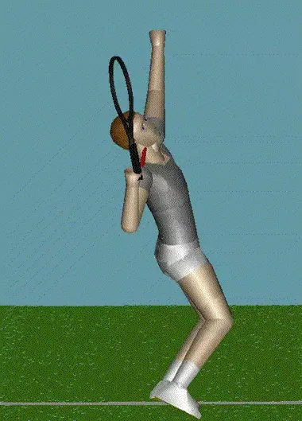
Trunk twist drives the first third of the backswing.
The first third of the downward racquet motion starts with the racket in the trophy position and continues until the racket travels about a third of the way down the backswing, pointing (from a rear view) to roughly at 10:00 on the face of a clock.
Again, this motion can be in the shape of either a Gamma or an Alpha loop. Either way, shoulder external rotation is the most important aspect of this motion in both loop patterns.
This rotation occurs as a result of several contributing sources. For some servers, this rotation is initiated partially by active muscular contraction. This is usually the case with the player uses the hesitation transition from the wind up to the backswing.
However, if the server has already built external rotation while moving through the trophy position, the role of conscious contraction is reduced or even eliminated. This is typical of players with a more continuous transition.
Regardless of the early presence of this conscious contraction, the main impetus for the (non-muscular) external rotation of the shoulder is the twisting rotation of the upper trunk and the force this applies to the arm at the shoulder joint.
This trunk twist creates much of the motion dependent effect that drives the racket and hitting arm downward. This is evident from the animation combining the serves of nine NCAA Division I players. The red arrow depicts the size and direction of the force applied to the upper arm.
As the first third of the backswing progresses, notice how the direction of the shoulder force assumes a more horizontal orientation. This orientation is more in the plane of the shoulders indicating the importance of upper trunk twist.
Understanding this mechanism is critical for coaches in learning how to increase the effectiveness of the backswing in the serve. You may recall from the previous article, that the timing of the leg drive was critical to the development of racket speed in the back swing. In the first third, its importance relates to the leg's influence in generating spin momentum and hip/trunk rotation.
You may also recall that our young player, whose data we have been studying in the 3D interface, started his leg drive late, perhaps mitigating to some extent the benefit of the force from upper trunk twist in generating shoulder external rotation. We found that this late leg drive was caused by issues related to the timing of his transition from the wind up to the backswing.
Second Third
The second third of the backswing motion takes the tip of the racket from roughly 10:00 to 8:00 on the face of a clock as seen from behind. The arm action in this second third of the back swing continues to be almost entirely external or backward shoulder rotation.
But due to the configuration of the hitting arm in this second third of the motion, the role of the twisting rotation of the trunk in driving this motion is reduced. This is because the hitting arm and racquet are positioned closer to the plane of the shoulders.
For the motion dependent shoulder force to continue driving the racquet downward with the arm in this position, the force must become more vertical. This is in fact what we see in the NCAA player composite animation during the second third.
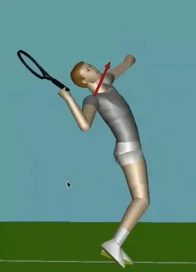
In the second third of the motion, the legs drive the racket downward.
To understand the origin of this vertical influence, we must recall what trunk motion occurs at this time. There are two factors consider. The first, is the leg drive, which is certainly contributing to the vertical acceleration of the entire body, and therefore the trunk.
In addition to the legs, there is also another potential contributing factor. This is the so-called "cartwheel" trunk rotation. This rotation is also contributing to the upward shoulder motion, and therefore also contributing to driving the racket downward.
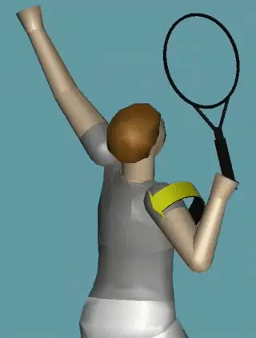
The external rotation in the backswing puts the internal rotators on stretch.
Role of the Muscles?
So clearly the motion dependent effect is critical in the second third, but what about active external muscle contraction? My research, in support of previous findings of other researchers, indicates that not only are the muscles not aiding racquet drop through contracting external rotators, the muscles are actually attempting to internally rotate the shoulder in the opposite direction through contraction of internal rotating muscles. This may seem surprising, but actually it is probably a critical factor in creating racket speed.
Let's see how this happens.
The NCAA player composite animation illustrates the relationship here. The rotating arrow drawn around the upper arm shows the average direction of the muscle pull during the backswing. The yellow color indicates the muscles are pulling in the direction of external rotation. When the arrow direction and color change to red this indicates the muscles are pulling in the direction of internal rotation.
Why would this be the case in high level serving? The internal rotating influence indicates that the muscles are being stretched even as they attempting to shorten or contract in the opposite direction. Muscle physiology tells us that this condition can be beneficial to muscular force output. We call this a "stretch shorten cycle." Stretching the muscles in the opposite direction can increase the force they generate when they eventually succeed in shortening.
The speed of this stretching effect is also important. In general the faster the contracting muscle stretches, the better the enhancement to subsequent force production. But mechanics research seems to indicate that it is important to spread the duration of this stretching sufficiently to prevent injury.
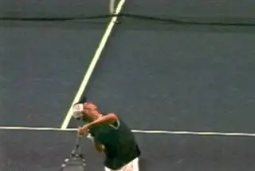
Does the speed of Andy's backswing increase the stretch in the internal rotators?
This is how the leg drive functions in the motion, allowing the contracting internal rotators to stretch a fast rate, but also keeping this rate within safe limits. This is why the timing of the leg drive is so important. If it is exhausted too soon, the stress on the shoulder may reach unsafe levels.
Research done at the Olympic games showed that when the leg drive was reduced, there was more loading on the shoulders among professional players.
Without enough leg drive, creating the full racket drop requires active muscular contraction to externally rotate the shoulder. Players who limit the use of the legs or end the leg drive too soon may end up using conscious contraction to abruptly reverse the motion and shift to the internal rotators to bring the racket upward. The result is very high force applied in a very short time. The subsequent loading can exceed the estimated force threshold that leads to injury.
This mechanism provides one potential explanation of how Andy Roddick generates so much racket head speed. By taking his hitting arm and racket out to the side in his windup, Roddick sets the stage to move through the backswing very quickly. This increases the speed that the internal rotators stretch, and may contribute to the speed of the internal rotation in the upward swing. But unlike many players with abbreviated backswings, Roddick times the leg drive perfectly with the execution of his backswing.
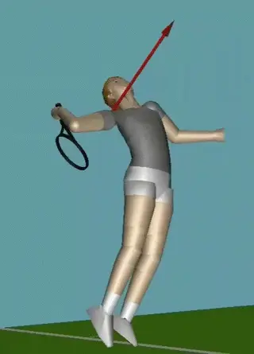
In the third segment of the backswing, the primary force comes once again from trunk twist.
Third Third
The third segment takes the racket tip to the lowest point, measured as the distance between the racket tip and the mid-point between the hips.
We have already seen in the animation that for high level servers the muscles are actually opposing the shoulder external rotation that is causing this arm and racquet motion. Again, we can look to the motion dependent effects as a cause of this last portion of the racquet drop and try to identify its sources.
Observation of the NCAA player animation shows a gradual orientation change away from vertical back into the plane of the shoulders, a plane that is now more tilted due the lean of the trunk.
Cartwheel rotation of the trunk is still contributing to the vertical force, but it is reasonable to assume the leg drive has much less influence. This is because at this point in the swing you have exhausted much of the potential of the legs.
The conclusion is that we are now back to upper trunk twist as a major factor continuing to drive the racket down the back. The upper trunk twist is once again creating the majority of the force at the shoulder, and driving the racket downward toward the bottom of the motion.
The final depth of the racquet drop, a critical component to racquet speed in the upward swing, depends on the timing of the leg drive, and related trunk rotation, in relation to the position of the racket. There is a major potential problem if the leg drive ends prior to the end of the backswing. This problem, you may recall, is sometimes symptomatic of an abbreviated wind up, especially in developing players.
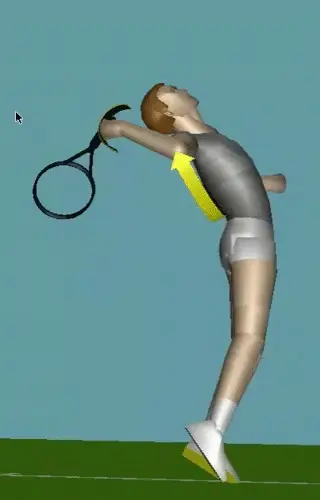
Two other joint motions: the wrist laying back, and the upper arm lifting from the shoulder.
Other Joint Motions
Although shoulder external rotation is the most important motion in the back swing, we also need to look at two other important joint actions.
Throughout the second half of the backswing, the wrist joint is progressively extending and moving toward a laid back position. This is a relatively passive action that provides an extended range of motion for wrist flexion in the upward swing.
The second movement also involves the shoulder joint. But now the motion shifts to abduction or the lifting of the upper arm lifting. Very near the end of the back swing, we can see how this works by watching the elbow start to elevate. This lifting or abduction of the upper arm establishes a joint rotation that is very important to the early part of the upward swing as we will see in the next installment.
Penultimate Racquet Head Speed
One of the primary goals for the backswing we identified at the beginning of the article was the creation racquet head speed. This effect is one of the first things I look for in developing players. So let's take a look at our example player and see what we can see.
In the data interface racket head speed can be assessed in two ways. The first is by selecting "Stroke Phase Statistics" in the "Data Options" menu and looking at the bars exhibiting the temporal length of the phase. This value should be less than 15 % of the total time and preferably closer to 10 %. We can get another perspective by selecting "Racquet Speed Data" and looking at the slope of the white line in the back swing, an increasing slope should be evident.
But even among pro players, there seems to be great variation in the speed of the racquet at the end of the back swing. This is not surprising as this speed is the result of a very complex array of seemingly independent body actions, actions I've tried my best to describe in this article.
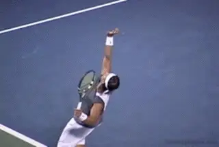
Even in pro tennis there is a wide range of backswing speeds.
To assess how these body actions are linked to the speed of the racquet, let's look at some more of the supporting 3 dimensional data in our interface. This will allow us to see quantitatively how these factors actually contribute the speed of the racquet at the end of the back swing.
Once again click on "Segment Contribution" in the "Data Options" menu. Activate all of the available joint contributors by clicking their name in the legend. The first thing to notice is that our example server does increase his racquet speed during the back swing although the rate of increase is not earth shattering.
Focus on the end of the back swing and note that three biggest contributors to racquet speed at the end of the back swing are hip rotation speed, wrist extension, and shoulder joint external rotation in that order. Based on earlier observations this pattern makes sense.
Our subject's less than impressive increase in racket speed seems to relate to two factors. These are a disappointing contribution from shoulder external rotation and virtually zero contribution from upper trunk twisting rotation.
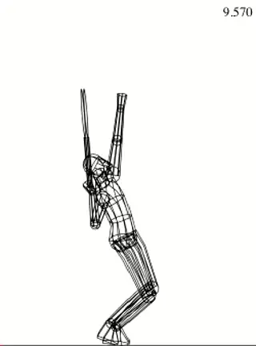
A composite study of college players shows the factors in racket speed.
Based on our analysis of the causes of shoulder external rotation, the fact that these occur together is not surprising. Still, it is interesting to see how things have changed over time.
It is clear that racquet speed improved in the latest measurement. To understand why, select "Upper Arm Twist" in the data options menu (at bottom). Here we see a marked improvement. This is most evicent in the second third of the backswing but carries over into the final third as well.
Now select "Upper Trunk Twist Rotation. There is virtually no change from the previous measurement except right at the end of the backswing. This indicates that the gains were due to improvement in leg drive profiles discussed in previous articles. Further the improvement has been primarily in the second third of the backswing motion.
It is also clear that further improvement in the back swing goals will require not only continuing to improve leg drive, but to a greater extent working on upper trunk rotation speed and timing. This should improve performance in the first and third thirds of the backswing.
To put our players values in perspective, I refer the reader to an earlier article on this site in which I report contribution to racquet speed from joint rotations as a composite of 9 N.C.A.A. Division I players. At the "racquet low point" or at the end of the back swing in the context of this article, the results indicated that upper trunk twist accounts for 22% of 29 m.p.h. or 6.4 m.p.h. (junior = 0% of 19.4 m.p.h. or 0 m.p.h.) of racquet speed, and shoulder external rotation 26% of 29 m.p.h. or 7.5 m.p.h. (junior = 24% of 19.4 or 4.6 m.p.h.).
Let's finish our analysis by identifying the key ending positions for the backswing back swing. As with the wind up, this list is not exhaustive but provides a frame of reference to assess a server's motion at the end of this phase.
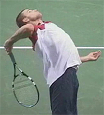
Racket Drop: from the mid hip to the lowest point of the racket tip.
Depth of Racquet Drop
This is the distance in inches from the mid hip to the tip racquet at the lowest point in the backswing. If the value is positive this means the tip is below the mid-hip. This indicates the player has ample range of motion for generating racket head speed in the upward swing.
The measured distance can be in found in "Racquet Path Data" section of the "Data Options" menu by scrolling to the table below the graph. As you can see, this junior player gets the racquet well below the mid-hip (9 inches). While good, it is not unusually for junior players to accomplish this feat as they tend to have good shoulder flexibility and their racquet is long relative to their body size.
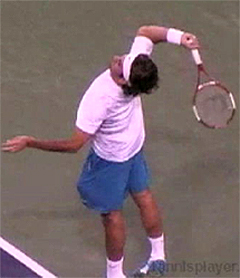
Elbow Angle: measured between the uper arm and forearm.
Angle of the Elbow
The second position is the angle at the elbow joint between the upper arm and the forearm at the completion of the backswing. This is the defining factor in the range of available rotation in elbow extension. As we will see in a future article, elbow extension is an important part of the upward swing. But it is very difficult to see without an overhead view.
This is where 3D measurements make it possible to evaluate factors that even experienced coaches may be uncertain about on court. The goal angle here is 70 degrees. This is fairly aggressive, as most players range from 70 -- 90 degrees.
Upper Arm Angle: For gifted players the angle may approach zero.
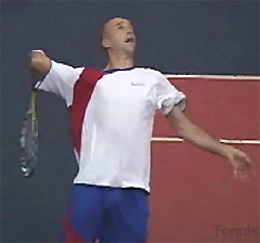
Angle of Upper Arm to the Horizontal Axis
The goal here is to attain an angle of no more than 20 degrees between the upper arm and a horizontal extending from the shoulder.
Larger angles above the horizontal will decrease racquet drop depth and reduce the range of motion of early shoulder rotation in the upward swing. For gifted pro players this angle may approach something close to zero.
<< Also increase the chance of shoulder impingement because of the shoulder abduction when the angle is above 0 degree >>
In a testament to the flexibility of youth, our example server is only slightly above the horizontal line at 10 degrees. Older athletes can find it increasingly difficult to attain even the goal angle of 20 degrees.
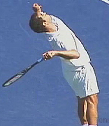
Trunk Segments: when do the shoulders and hips align?
Angle of the Trunk Segments (X-Factor)
This bench mark measures the angle of the hips and the shoulders at the key point in the backswing when they are aligned. We can identify this point by viewing the motion from an overhead in our 3D reconstructions.
We know that the hips and the shoulders rotate independently. The hips rotate first, but at some point in the motion the shoulders catch up so that the two are in alignment. We define this position as an angle of 25 -- 35 degrees to a line perpendicular to the baseline. Achieving this benchmark will facilitate the proper sequence of hip and shoulder rotation in the upward swing.
Conclusion
There are many options in developing the backswing than can maximize the effectiveness of the upward swing and development of racket speed. I find the backswing to be one of the most fascinating phases of any stroke because of its complexity, its diversity in mechanical mechanisms, and the link between motion of the upper and lower body. As a coach I have found that addressing these issues has also had the most positive impact on the serves of my students.
References:
The research referenced regarding upper body joint loading as it relates to leg drive was headed by Dr. Bruce Elliott. Elliott, B., G. Fleisig, R. Nichols, and R. Escamilla. 2003. Technique effects on upper limb loading in the tennis serve. Journal of Science and Medicine in Sport 6(1): 76-87.
Previous research indicating activity of shoulder internal rotator muscles during upper arm external rotation in the back swing, and the repercussions, was reported in:
Bahamonde, R.E. Kinetic analysis of the serving arm during performance of the tennis serve, In R.J. Gregor, R.F. Zernicke, and W.C. Whitting (Eds.), XVIIth International Society of Biomechanics, 1989.
Noffal, G. Where do high speed serves come from?, In B. Elliott, B. Gibson, and D. Knudson (Eds.), XVIIth International Symposium on Biomechanics in Sports, 1999.

Dr. Brian Gordon has changed the understanding of the biomechanics of high level tennis technique. His Biomechanically Engineered Stroke Technique (BEST) is the only empirically based stroke mechanics system in the world, growing from three decades of both academic and applied on court research. He is a founder of the Tennis Center for Performance Research in Miami, Florida, which is creating a new paradigm for player development. The center has assembled an unprecedented group of specialists with cutting edge knowledge across the entire range of tennis performance.
To visit his website, Click Here!
Top contact him directly, Click Here!
Source: tennisplayer.net archive — The Backswing - The Upper Body -Part 2.docx (John Yandell teaching library, 2002-2022). Extracted and rendered as HTML for Tennis Future Lab.